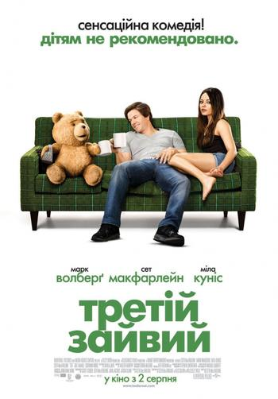

Топ 2 фільми
Головна сторінка
Третій зайвий

- Режисер: Сет Макфарлейн
- Дата випуску: 29 червня 2012 року
- Касові збори: $549 368 315
- Рейтинг: 6.9 / 10
Вікіпедія
Дивитися
Топ 1 "Брати з Грімзбі"

- Режисер: Луї Летер'є
- Дата випуску: 24 лютого 2016 року
- Касові збори: 28 000 000 $
- Рейтинг: 6.2 / 10
Вікіпедія
Дивитися